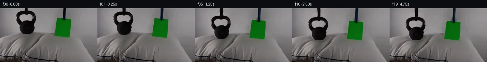

![首帧]()

Round 00
2026-11-05T12:21:34.654238+00:00像素候选变化代码 +237/−0inspection 更新
pixels d046534a3e369ec9 · code b00eda4dd05be790
查看本轮 generate.py 真实 diff
--- previous/generate.py +++ current/generate.py @@ -0,0 +1,237 @@ +#!/usr/bin/env python3 +"""Generate a 20-frame, source-pixel animation for the pillow weight demo.""" + +from pathlib import Path +import numpy as np +import cv2 +from PIL import Image, ImageDraw, ImageFilter + +from artifact_io import save + + +ROOT = Path(__file__).resolve().parent +W, H = 256, 144 + + +def bell_masks(src): + """Return a tight bell cutout mask and a slightly larger inpaint mask.""" + yy, xx = np.mgrid[:H, :W] + gray = cv2.cvtColor(src, cv2.COLOR_RGB2GRAY) + + # The body is solid, including the very low-contrast embossed label. + body = (((xx - 69.0) / 20.0) ** 2 + ((yy - 51.5) / 18.5) ** 2 <= 1.0) + body &= yy >= 31 + + # Select the actual dark handle pixels, retaining its bright center hole. + handle_zone = (xx >= 40) & (xx <= 96) & (yy >= 5) & (yy <= 49) + handle = handle_zone & (gray < 82) + handle = cv2.morphologyEx(handle.astype(np.uint8), cv2.MORPH_CLOSE, + np.ones((3, 3), np.uint8)) > 0 + # Vertical neck linking the handle to the bell body. + neck = (xx >= 64) & (xx <= 75) & (yy >= 29) & (yy <= 43) + mask = (body | handle | neck).astype(np.uint8) * 255 + mask = cv2.morphologyEx(mask, cv2.MORPH_CLOSE, np.ones((3, 3), np.uint8)) + inpaint = cv2.dilate(mask, np.ones((5, 5), np.uint8), iterations=1) + return mask, inpaint + + +def paper_masks(src): + """Segment the saturated green sheet without swallowing the gray pillow.""" + r, g, b = src[..., 0], src[..., 1], src[..., 2] + green = ((g > 58) & (g > r * 2.0) & (g > b * 1.65)).astype(np.uint8) * 255 + green = cv2.morphologyEx(green, cv2.MORPH_CLOSE, np.ones((3, 3), np.uint8)) + # Fill the quadrilateral interior (including pixels covered by its cord). + poly = np.zeros((H, W), np.uint8) + cv2.fillConvexPoly(poly, np.array([[150, 25], [187, 29], [183, 79], [143, 74]], np.int32), 255) + mask = cv2.bitwise_or(green, cv2.bitwise_and(poly, cv2.dilate(green, np.ones((9, 9), np.uint8)))) + mask = cv2.morphologyEx(mask, cv2.MORPH_CLOSE, np.ones((3, 3), np.uint8)) + inpaint = cv2.dilate(mask, np.ones((5, 5), np.uint8), iterations=1) + return mask, inpaint + + +def soft_alpha(mask, radius=0.65): + im = Image.fromarray(mask).filter(ImageFilter.GaussianBlur(radius)) + return np.asarray(im, np.float32) / 255.0 + + +def make_clean_plate(src, bell_inpaint, paper_inpaint): + # Remove moving bodies. Thin suspension strips are painted separately. + removal = cv2.bitwise_or(bell_inpaint, paper_inpaint) + clean = cv2.inpaint(cv2.cvtColor(src, cv2.COLOR_RGB2BGR), removal, 5, + cv2.INPAINT_TELEA) + clean = cv2.cvtColor(clean, cv2.COLOR_BGR2RGB) + # Restore source outside the small removal support exactly. + clean[removal == 0] = src[removal == 0] + return clean + + +def surface_y(x): + """Approximate the visible pillow/wall boundary under the moving objects.""" + x = np.asarray(x, np.float32) + left = 64.5 + 0.0018 * (x - 60.0) ** 2 + right = 70.0 + 0.0020 * (x - 165.0) ** 2 + # Switch in the central valley; only local neighborhoods are warped. + return np.where(x < 116, left, right) + + +def deform_pillow(clean, bell_depth, paper_depth): + """Pull the original cloth texture downward with two smooth displacement bowls.""" + yy, xx = np.mgrid[:H, :W].astype(np.float32) + surf = surface_y(xx) + # Broad heavy depression and very narrow light-paper dimple. + dx_b = np.exp(-0.5 * ((xx - 69.0) / 25.0) ** 2) + dx_p = np.exp(-0.5 * ((xx - 164.0) / 17.0) ** 2) + # Displacement extends into the wall just enough to reveal a lowered silhouette, + # and fades before the pillow's lower piping. + vertical = np.exp(-0.5 * ((yy - surf) / 31.0) ** 2) + gate = 1.0 / (1.0 + np.exp(-(yy - surf + 10.0) / 3.0)) … diff truncated; 150 more lines …